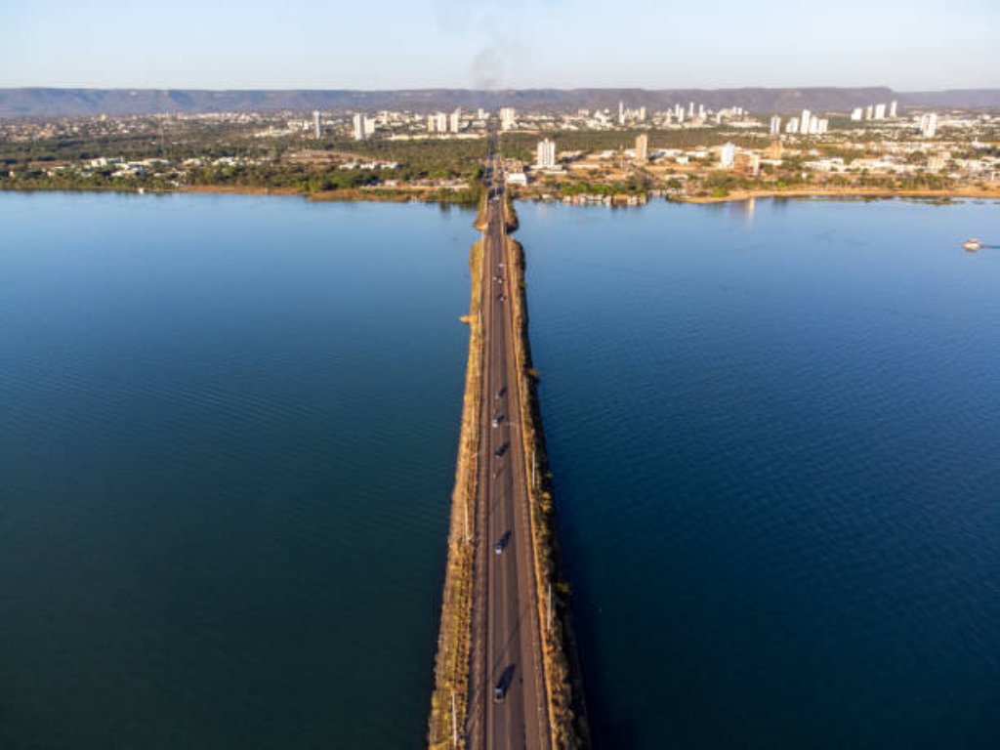

O Tocantins é o mais novo estado brasileiro, criado em 1988 com a divisão de Goiás. Localizado na região Norte, sua capital é Palmas. O estado é conhecido por suas belezas naturais, com destaque para a Ilha do Bananal, a maior ilha fluvial do mundo, e o Rio Araguaia. A economia tocantinense é baseada na agropecuária, com produção de soja, milho e carne bovina.

Voltar